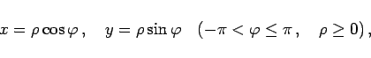
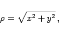

Inhalt Index DeskTop Bronstein

 Geometrie Vektoralgebra und analytische Geometrie Analytische Geometrie der Ebene Ebene Koordinatensysteme und deren Transformationen
Geometrie Vektoralgebra und analytische Geometrie Analytische Geometrie der Ebene Ebene Koordinatensysteme und deren Transformationen


Der Übergang von kartesischen zu Polarkoordinaten und umgekehrt wird mit den folgenden Formeln vollzogen, wobei Koordinatenursprung und Pol sowie Abszissenachse und Polarachse zusammenfallen sollen:
|  | (3.310a) |
|  | (3.310b) |